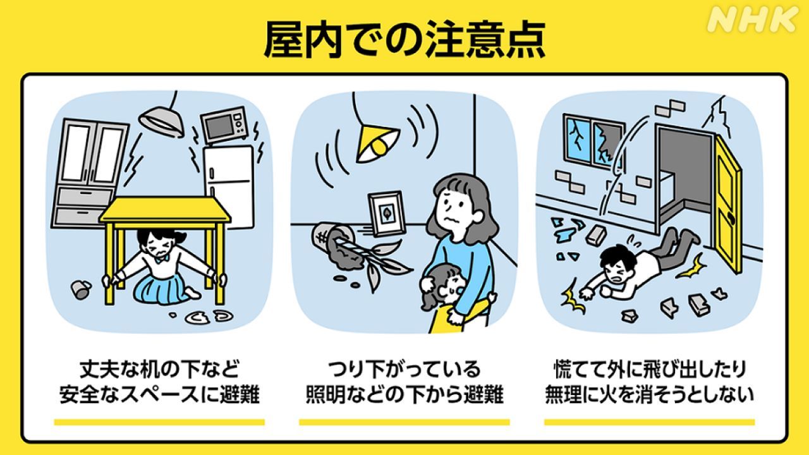
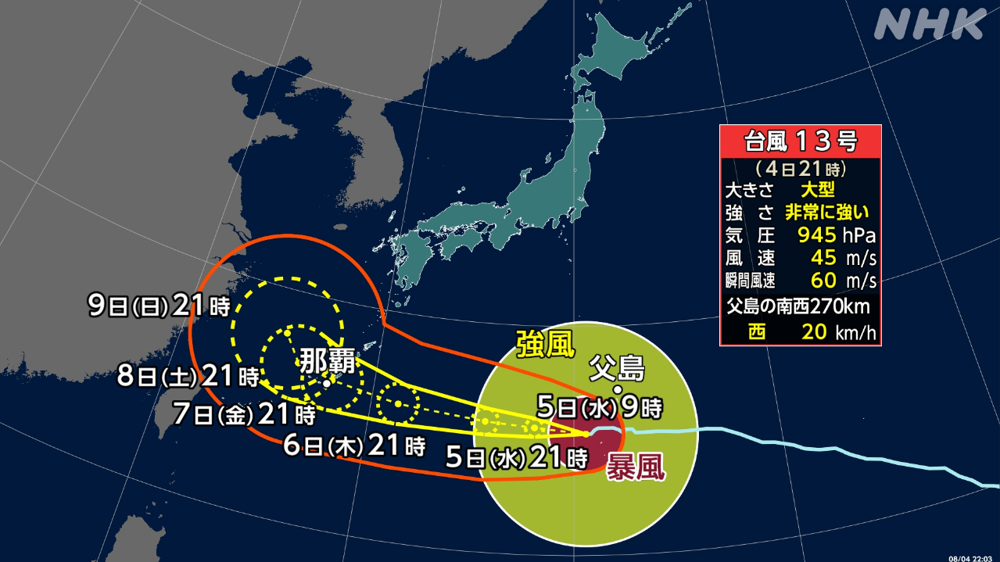
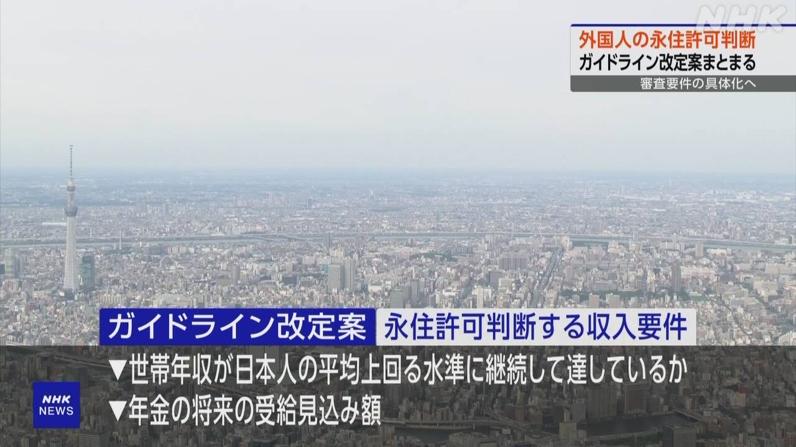

最新ニュース
1️⃣ 熊本の地震 これからも強い地震に気をつけて
熊本県の震度7の地震から1週間以上が過ぎました。
気象庁は「地震の前と比べて、震度5強以上の強い地震が起こる確率が80倍ぐらいに上がっています。これからも1週間ぐらいは強い地震に気をつけてください」と言っています。
熊本県は5日、38℃以上になって、とても危険な暑さでした。
気象庁は「暑いので、地震のあと、家の片づけをしている人は、何度も休んで、熱中症にならないように気をつけてください」と言っています。
2️⃣ 地震のときは頭を守ってください

大きな地震が起こったときは、次のことに気をつけてください。
地震のときは、テーブルの下などに入って揺れるのが止まるまで待ちましょう。
上から物が落ちてきたり、棚などが倒れたりして危険だからです。
外にいたら、かばんなどで頭を守ってください。
エレベーターに乗っていたら、全部の階のボタンを押して、ドアが開いたらすぐに降りてください。
車を運転していたら、ゆっくり止めてください。
3️⃣ 台風13号 沖縄県などでは雨と風に気をつけて

気象庁によると、台風13号が沖縄県や鹿児島県の奄美地方に向かっています。大きくてとても強い台風です。
海では波が高くなりそうです。沖縄県と奄美地方では6日から波が高くなりそうです。
風も強くなります。沖縄県では家が倒れるぐらいの強い風が吹くかもしれません。
雨にも気をつけてください。
地震があった熊本県でも、6日から風が強くなって、雨が降るかもしれません。気象庁は、新しい情報を調べて気をつけてほしいと言っています。
4️⃣ 政府「日本にずっと住む外国人の審査のルールを変える」

外国人の「永住」についてのニュースです。
外国人が日本にずっと住むことを「永住」と言います。
日本の政府は、外国人の永住について、審査のルールを変えることを考えています。
新しいルールの案では、外国人の家族の1年間の収入が、日本人の平均より多くなっているか、調べます。
そして、日本語の能力や、日本の社会のルールなどをよく知っているかも調べます。
政府は、この案について、多くの人から意見を聞くことにしています。
収入については、今年4月に永住を申し込んだ人から、新しいルールに変えたいと考えています。
そのほかのことは、来年4月からルールを変えたいと言っています。
- 〜以上
- 〜から
- 〜すぎる
- 〜ている / 〜でいる
- 〜くらい / 〜ぐらい
- 〜てください / 〜でください
- 〜になる
- 〜ても / 〜でも
- 〜後 / 〜あと
- 〜ならない
- 〜ように
- 〜ので
- 〜こと
- 〜など
- 〜ましょう / 〜ましょうか
- 〜まで
- 〜たり〜たりする
- 〜によると
- 〜そうだ
- 〜かもしれない / 〜かもしれません
- 〜がある / 〜がいる
- 〜について
- 〜ず / 〜ずに
- 〜より
- 〜ことにする
- 〜ことにしている
vebaev.github.io
Generated: 2026-08-05 12:53:27 UTC